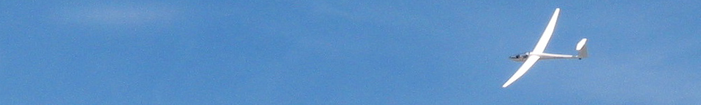
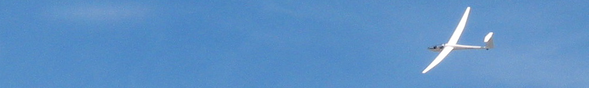
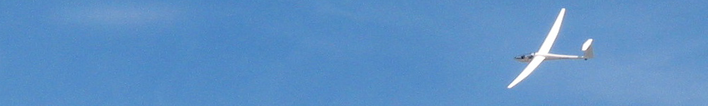
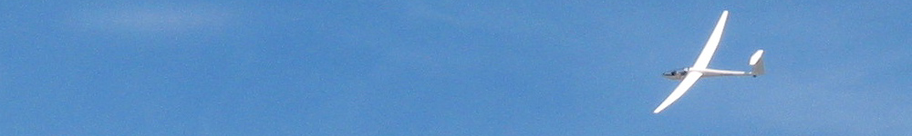

Pour débuter la formation, il suffit de souscrire la licence fédérale qui sera réglée en même temps que la cotisation au club, les vols peuvent alors commencer avec un instructeur du club. Un certificat médical obtenu auprès d'un médecin agréé, une fiche d'état civil seront ensuite nécessaires, au plus tard pour effectuer le premier vol en solo.
Il suffit en général d'une dizaine d'heures d'apprentissage en doubles commandes pour voler seul, sous la responsabilité d'un instructeur.
Il s'obtient facilement en une saison. Il permet de voler librement, sans passager, et sans quitter le local de l'aérodrome.
Les autorisations additionnelles "Emport de passagers" et "Vol sur la campagne" sont délivrées après un entrainement adapté, elles permettent d'emmener un passager et de parcourir des circuits longs de plusieurs centaines de kilomètres.
Le circuit le plus long parcouru par un pilote de l'A.S.V.R.D : 617 kms en 7 heures par Thierry Thibaux lors des Championnats de France 1997.